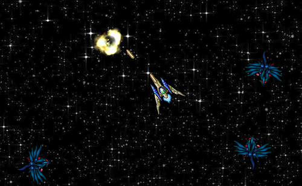
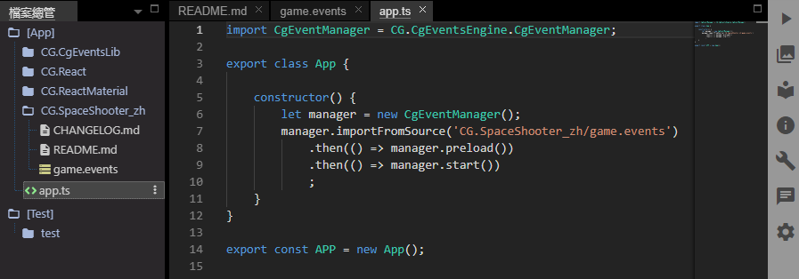
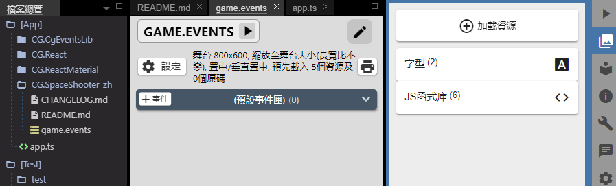
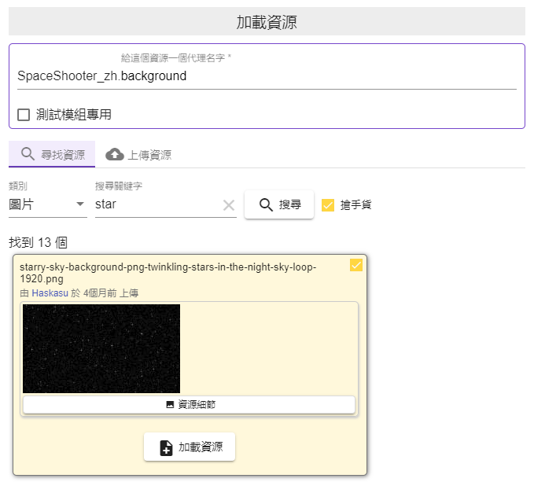
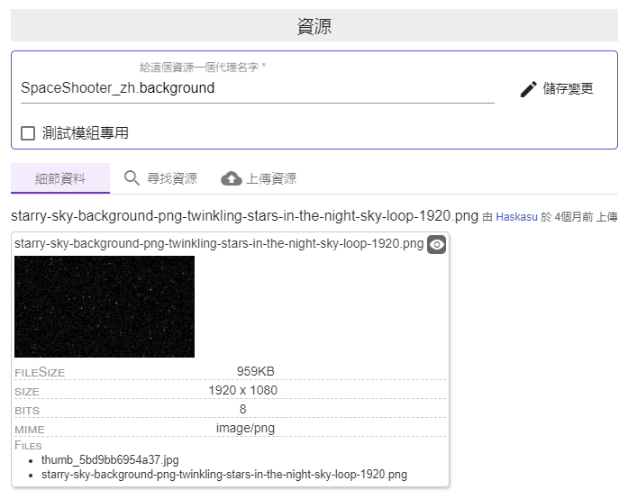
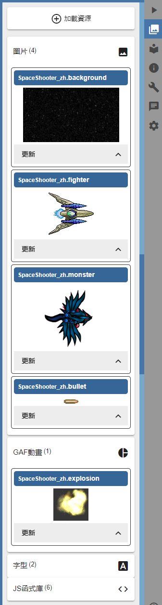
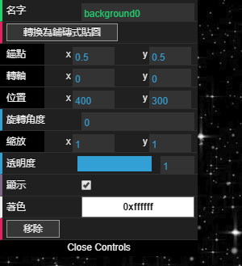
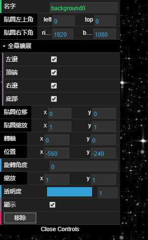
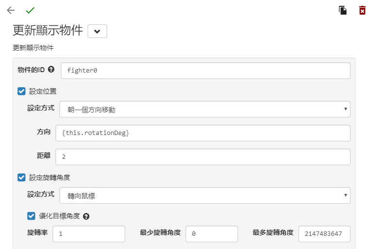

編輯事件表¶
規畫遊戲流程¶
製作遊戲的第一步，也是最重要的一步，就是遊戲設計與企畫。雖然現在要做的只是一個教學用的小遊戲，但是小小企畫一下還是不可少的步驟。
我們要做的是「太空戰機」，玩家控制一台太空戰機，在宇宙中消滅太空怪獸，遊戲畫面採上視視角，也就是從舞台正上方往下看的視角。
太空怪獸會自動往玩家靠攏，碰到玩家的戰機時戰機爆炸，遊戲結束，任務失敗。
玩家按下滑鼠左鍵會朝戰機當時的方向射出飛彈，飛彈離開畫面後會自動消失，若飛行途中擊中怪獸，則飛彈和怪獸會一起消失。所有怪獸都被消滅後，遊戲結束，任務成功。
事件編輯器¶
從前面 CG同人陣製作示範教學 新創專案中的 README.md 這個檔案中點擊「編輯遊戲事件表」即可快速在開啟事件編輯器編輯 game.events 。
為什麼是 game.events ?
新創專案中預設第一個被執行的事件表是 game.events ，在檔案總管中打開 app.ts 就可以看出程式第一個載入的事件表是哪個。
事件編輯器的最上端有試玩按鈕、設定按鈕、列印按鈕，右上角有「編輯原始資料(JSON)」按鈕， 雖然這些按鈕我們暫時還用不到，不過以下還是先一一解釋這些按鈕的用途，以免同學們心底不踏實。
- 試玩按鈕: 試玩這個事件表。
- 設定: 設定舞台大小、位置及預先載入的資料等設定。
- 編輯原始資料(JSON): 以文字編輯器編輯事件表的原始資料，可以快速複製事件、修改屬性等工作。
- 列印事件表: 方便在紙上分析事件內容或團隊討論。
再下來是「預設事件匣」，使用 事件 可以在預設事件匣中增加一個新的事件，接下來就讓我們新增這個遊戲的第一個事件吧。
加載遊戲資源¶
首先我們要利用即將建立的第一個事件，將星空、戰機、怪獸放到遊戲的舞台上。但是在放上去之前，我們必須先把需要用到的圖案加載到我們的專案中。請按下列步驟加載需要的資源。
- 網頁右邊有一列直排的選單，按下第二個按鈕 就可以打開加載資源的面板。
參考截圖
- 按下 加載資源，打開加載資源視窗。
- 接著在 給這個資源一個代理名字 的地方輸入 background ，此時尋找資源與上傳資源的面板就會開啟。
- 在尋找資源面板中選擇 圖片 類別，搜尋關鍵字裏填入 star ，然後按下 搜尋 按鈕。
- 選擇星空圖後，再按下 加載資源 按鈕 (示範專案中使用的是 starry-sky-background-png-twinkling-stars-in-the-night-sky-loop-1920.png)。
參考截圖

接著用同樣的方法載入以下資源：
| 代理名字 | 類別 | 關鍵字 | 資源名字 |
|---|---|---|---|
| fighter | 圖片 | fighter | ezgif.com-rotate.gif |
| monster | 圖片 | monster | fly-monster.png |
| bullet | 圖片 | bullet | bullet.png |
| explosion | GAF動畫 | explosion | explosion |
參考截圖
編排遊戲舞台¶
接下來回到事件編輯器，我們要新增第一個事件了。
點擊預設事件匣中的 事件 開啟新增事件視窗，並在事件ID中填入 初始化 ，再按視窗左上角的的綠色勾勾完成。
因為我們想要讓這個事件在遊戲一開始就立刻執行，所以我們不加觸發也不加檢查，只加入初始化需要的動作。按下 動作 開啟增加動作視窗，並從目錄中選擇 新增 顯示 建立圖層佈局 ， 打開 建立圖層佈局 的視窗後，依下列步驟將星空、戰機、怪獸放到遊戲的舞台上。
在圖層的ID填入 gameroot
參考下圖將顯示面板中的資源圖拉到舞台上放好
- 先放 background (星空背景)
- 再拉 fighter (戰機) 到舞台中央
- 再拉四次 monster (怪獸) 到舞台四周
- 請注意，將圖案放到舞台後，編輯器會自動幫每個圖案取一個名字，在示範專案中可以看到，星空背景叫做 background0 , 戰機叫 fighter0 , 怪獸分別是 monster0, monster1, monster2, monster3 , 這些名字在之後的事件中會用到，請留意一下。
其中星空背景的做一些特殊設定，因為我們想讓戰機四處飛行時，背景能夠在後面無限循環。請選擇舞台上的星空圖(物件列表中選擇 background0)， 在黑色的設定表單中，點擊 轉換為鋪磚式貼圖 ，然後在 全幕擴展 的設定中，將四邊都勾選 (參考下圖)。
 
建立攝影機¶
我們希望在戰機飛行時，畫面要跟著戰機移動，讓戰機能一定保持在畫面中央，這時我們就需要建立一台攝影機，並讓攝影機的焦點對準戰機。
在同一個事件(初始化)中，按下 動作 加入第二個動作，從目錄中選擇 新增 顯示 建立攝影機 ， 在 建立攝影機 的視窗中，填入以下資料
- 攝影機ID: gameCam
- 攝影機舞台ID: gameroot
- 焦點物件ID: fighter0
然就按下視窗左上角的綠色勾勾，如此就完成了擁有兩個動作的初始化事件。
太空戰機! 前進!¶
接下來我們要新增第二個事件，用來讓太空戰機在宇宙中飛行。這個事件也是不需要觸發與檢查，要讓這個事件在一開始就啟動。
點擊預設事件匣中的 事件 開啟新增事件視窗，並在事件ID中填入 戰機飛行 ，接著在 重覆次數 中選擇 -1 無限重覆，再按視窗左上角的的綠色勾勾完成。
和初始化事件不同的是，我們在這個事件中會加入一個動作讓戰機往前移動一小段距離，這個動作可不能只做一次，我們需要這個事件每一小段時間就重覆執行一次來達到飛行的效果。
接著點擊 戰機飛行 事件中的 動作 ，從目錄中選擇 更新 顯示 更新顯示物件 ， 依下列步驟設定更新物件的內容:
- 物件的ID: fighter0
- 勾選 設定位置 ，設定方式選擇 朝一個方向移動 ，距離填入 2
- 勾選 設定旋轉角度 ，設定方式選擇 轉向鼠標
- 點擊視窗左上角的綠色勾勾完成
參考截圖
